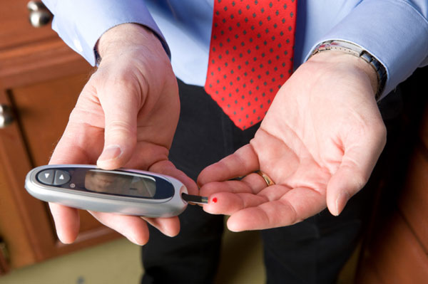
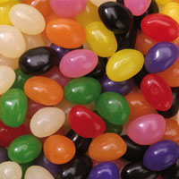

Diabetic Emergency
Diabetic Emergency
Diabetes is a condition which is caused by an imbalance of sugar, or glucose, in the blood. Because all human cells require sugars as food, the body takes in complex sugars in a normal diet. So that the body's cells can use these sugars, an organ called the pancreas secretes a protein hormone called insulin, which attaches to the sugars. This allows the cells to recognise the sugars as food, and absorb the necessary glucose.
Diabetes is due to an imbalance in the production of vital insulin. It is estimated that one in twelve Australians have diabetes, and this rate is increasing. Diabetic emergencies appear in two forms hypoglycaemia and hyperglycaemia.
Hypoglycaemia
Hypoglycaemia, or low blood sugar, is a dramatic imbalance where the tissues, especially the brain cells, become starved of essential blood sugar. This condition is the more common type and especially dangerous as its onset is rapid. The result of further deprivation of sugar is that the casualty becomes unconscious and death may follow within hours.
Common causes of low blood sugar levels include:
 Drinking alcohol without food
Drinking alcohol without food
 Skipping or delaying meals and snacks
Skipping or delaying meals and snacks
 Not eating enough carbohydrate (starchy) food
Not eating enough carbohydrate (starchy) food
 Too much insulin or diabetes tablets
Too much insulin or diabetes tablets
 Extra physical activity without eating extra food
Extra physical activity without eating extra food
Hyperglycaemia
Hyperglycaemia, or high blood sugar, is an imbalance of blood sugar, which usually requires the affected person to supplement their insulin requirements by periodic injections of the hormone. A casualty who is unable to obtain this supplement is liable to collapse into a serious state called diabetic coma. This condition can develop over many hours or days.
Common causes of high blood sugar levels include:
 Sickness or Infection
Sickness or Infection
 Stress
Stress
 Too much carbohydrate (starchy) food at once
Too much carbohydrate (starchy) food at once
 Not enough insulin or diabetes tablets
Not enough insulin or diabetes tablets
 Other tablets or medicines
Other tablets or medicines

Signs and Symptoms
Low Blood Sugar
 pale
pale
 profuse sweating
profuse sweating
 hunger
hunger
 dizziness
dizziness
 tingling around the mouth and lips
tingling around the mouth and lips
 slurred speech
slurred speech
 confused or aggressive – may appear to be drunk
confused or aggressive – may appear to be drunk
 rapid pulse
rapid pulse
 shaking or seizures
shaking or seizures
 tiredness or weakness
tiredness or weakness
 drowsiness which may lead to becoming unconscious
drowsiness which may lead to becoming unconscious

Care and Treatment
 call Triple Zero (000) for an ambulance
call Triple Zero (000) for an ambulance
if conscious:
 5 – 7 jelly beans, or
5 – 7 jelly beans, or
 3 glucose tablets, or
3 glucose tablets, or
 150ml of soft drink (not diet), or
150ml of soft drink (not diet), or
 2 – 4 teaspoons of sugar or honey, or
2 – 4 teaspoons of sugar or honey, or
 100ml of Lucozade
100ml of Lucozade
 repeat if casualty does not improve after 5 -10 minutes
repeat if casualty does not improve after 5 -10 minutes
 on recovery, assist with medication and encourage ingestion of carbohydrate (starchy) food such as a piece of fruit, a glass of milk, a sandwich or 2 – 4 dry biscuits
on recovery, assist with medication and encourage ingestion of carbohydrate (starchy) food such as a piece of fruit, a glass of milk, a sandwich or 2 – 4 dry biscuits
if unconscious:
 call Triple Zero (000) for an ambulance
call Triple Zero (000) for an ambulance
 place casualty in recovery position
place casualty in recovery position
 if Glucagon is available it may be given in an emergency by a suitably instructed person
if Glucagon is available it may be given in an emergency by a suitably instructed person
 DO NOT attempt to give insulin injection
DO NOT attempt to give insulin injection
 DO NOT give any food or drink by mouth to an unconscious diabetic
DO NOT give any food or drink by mouth to an unconscious diabetic

Signs and Symptoms
High Blood Sugar
 hot, dry skin
hot, dry skin
 feeling constantly thirsty
feeling constantly thirsty
 passing large volumes of urine, frequently
passing large volumes of urine, frequently
 smell of acetone (nail polish remover) on the breath
smell of acetone (nail polish remover) on the breath
 drowsiness and extreme tiredness
drowsiness and extreme tiredness
 blurred vision
blurred vision
 weight loss
weight loss
 infections
infections
 unconsciousness, progressing to coma
unconsciousness, progressing to coma

Care and Treatment
 definitive treatment for high blood sugar requires medical expertise
definitive treatment for high blood sugar requires medical expertise
 when in doubt if the casualty has low or high blood sugar,treat as for low blood sugar
when in doubt if the casualty has low or high blood sugar,treat as for low blood sugar
Useful Resources
Diabetes Australia
 1800 640 862
1800 640 862
http://www.diabetesaustralia.com.au
International Diabetes Institute
 (03) 9258 5050
(03) 9258 5050
http://www.diabetes.com.au